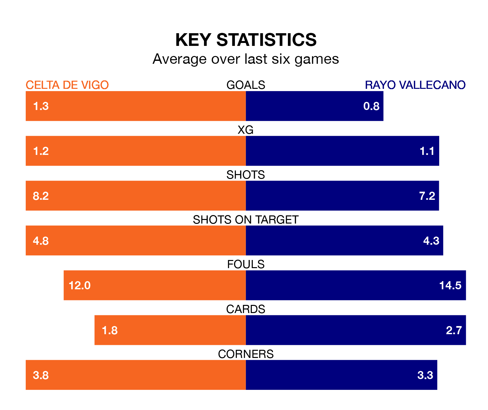

Struggling Celta de Vigo face Rayo Vallecano at Abanca-Balaídos on Sunday looking to build on a win in their last league outing.
After securing all three points with a 2-1 victory over Sevilla on March 17, Celta sit 17th in La Liga.
They travel to play a Rayo side 15th in the standings, who also won their last match, 2-0 against Real Betis.
In the last 10 years, Celta and Rayo have played each other on 12 occasions. They won four each, and they drew four times.
On average, Celta scored 1.5 goals and Rayo 1.2 in those matches.
Their last meeting was on December 11, when they played out a 0-0 draw.
With Stole Dimitrievski between the sticks, Rayo can rely on one of the league's safest pair of hands. He has kept 10 clean sheets in his 29 appearances this season, and only two other 'keepers – Athletic Club Bilbao's Unai Simón and Real Sociedad's Álex Remiro – have been able to prevent the opposition scoring on more occasions in La Liga.
In Celta's net, Vicente Guaita has five clean sheets in 20 games. He has conceded a goal every 74 minutes, 10% more often than the 84 minutes between goals for Dimitrievski.
The home side are in mixed form in La Liga, with two wins and a draw from their last six games.
With a win and two draws over that period, the visitors' form is slightly worse – they have taken five points from 18, compared to Celta's seven.
With 25 goals in 29 games so far this season, Rayo are the league's joint-third-lowest scorers with 0.9 goals per game. And they are conceding at an average rate, letting in 38 goals at a rate of 1.3 per game.
Celta are also below average scorers, with 1.1 goals per game, compared to a league average of 1.3. They have conceded 1.5 goals per game.
Updated: 12:39 (UTC), 26/03/24